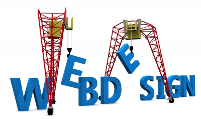
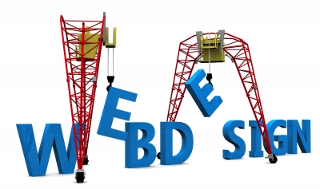
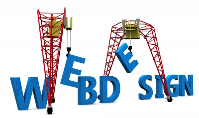
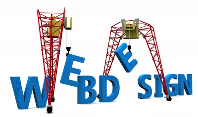

- Planejamento, desenvolvimento e publicação de web sites (HTML5)
- Tratamento de imagens, tipologia, animação e marketing digital
- Ferramentas Adobe: Photoshop, Flash, Fireworks, Dreamweaver

 


